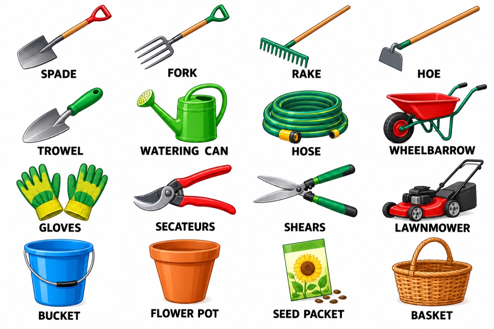
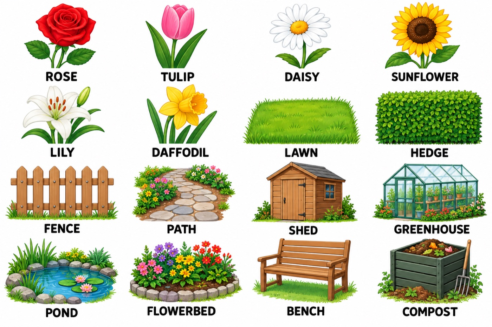

What comes to mind?
Let's see what comes to mind. Have a go. Don't worry about mistakes!
Say or write: What words do you know about gardens and plants?
Today we're working on garden words so you can say what you have in a garden and what you do there.
Think about it: Some people love gardening. Other people think it is boring. Where do you stand?
Garden Words
Look at the picture. Say the word. Then click the card to check.
In the garden
Tools
Small things that grow
What we do
More tools
Look at the picture. How many tools do you know?

Flowers and garden things

Without looking: Close your eyes. Say as many garden words as you can in 30 seconds.
Practice
Choose the best word. You will see the answer straight away.
1. You use a ______ to dig a hole.
2. You use a ______ to give water to the plants.
3. We put ______ in the soil, and they grow into plants.
4. I cut the ______ every week with a lawnmower.
5. I wear ______ so my hands stay clean.
6. Tomatoes and carrots are ______.
Make your own
Write one question like these, with a gap, for a friend to answer. Use one of today's words.
A Small Garden
Anna has a small garden behind her house. There is a green lawn and a path to a wooden shed. In spring, she plants seeds for carrots and beans. In summer, she waters the garden every evening. She loves the roses along the fence, but she does not like the weeds! In autumn, she picks apples from the old tree.
True or false?
1. She puts seeds in the soil in spring.
2. She gives the plants water in the morning.
3. She likes the roses.
4. She picks apples in summer.
5. She enjoys the weeds.
Now you
What do you do in each season? Say one sentence for each. Use the words you learned.
- In spring, I .
- In summer, I .
- In autumn, I .
- In winter, I .
Not a gardener? Imagine a garden you would like to have.
Useful sentences:
- I water the plants every day / twice a week.
- I never pick the flowers.
- My favourite flower is ______ because ______.
Speak
Choose two cards. Speak for one minute about each. There is no right answer.
Describe a garden you know, or the garden you would like to have. What is in it?
What is your favourite flower, fruit or vegetable? Why do you like it?
Weeds, birds, no rain, too much rain… What can you do?
Explain how to grow a plant from a seed. Use first, then, next, finally.
Tell me about a day outside that you really enjoyed.
You want to give a plant to a friend. Which plant? Why?
Think and explain
Why is gardening good for people? Give two reasons.
Dream garden: Write three sentences about it. Then say them without looking.
Look Back
From earlier lessons. Have a go. Don't look anything up.
- Say three things you do every week. (Use the present simple.)
- What is the difference between "I like tea" and "I'd like tea"?
- Say two sentences about your kitchen with "There is" and "There are".
Tools picture. Choose four tools from the picture. Say what you do with each one.
Today's words. Say or write all the garden words you can remember. Aim for ten.
flower · lawn · vegetables · spade · watering can · gloves · seeds · weeds · soil · plant · water · pick
Think about how you learn: Which activity helped you remember the words best – the pictures, the practice, or the speaking?
We said you would be able to say what you have in a garden and what you do there. Can you?
Garden Word Race
Read the clue. Type the garden word and press Enter. You have 90 seconds. Beat your own score!
Press Start when you are ready.
Points: +10 for each word, +2 bonus for each word in a row after the first. Words you miss are shown at the end.